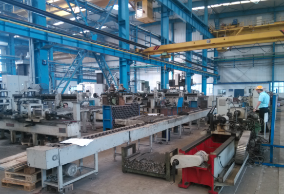
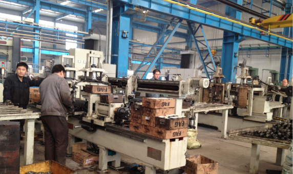
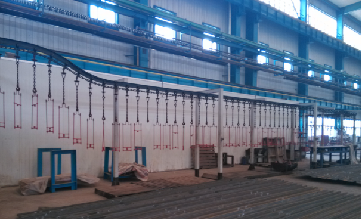
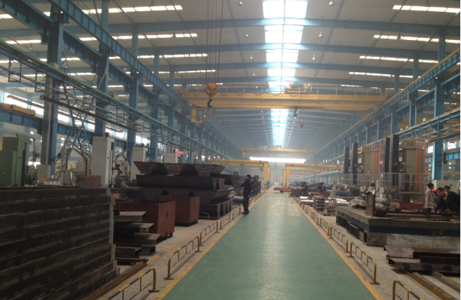

首页>公司简介
河北林桂商贸有限公司，是一家专业的矿用机械生产企业，具有科研、试验、设计、制造、安装成套机械设备能力， 工厂占地面积47.3万平方米，其中生产建筑面积14.7万平方米；有职工260余。 工厂的主要产品有：带式输送机，托辊，滚筒，输送带。我司还生产耐磨的复合托辊，复合托辊生产基地在山东省内。
多年来，我司在加强自主创新的基础上，不断引进、消化和吸收国际先进技术、先进工艺，拥有一条半自动化托辊生产流水线和一条自动化托辊生产流水线。特别是在研制生产大带宽、高带速、高带强、大运量和特殊用途带式输送机方面一直处于国内领先地位。现可设计生产最大带宽2.4m，带速6.1m/s，带强7000N/mm，输送量9000t/h，单机长度10km以上的带式输送机。我司生产的带式输送机获国家“优等品”称号，通过国家煤安认证。
我司生产的带式输送机，先进的技术，优良的性能，一流的质量，广泛应用于上海宝钢、葛州坝枢纽工程、曹妃甸港、秦皇岛港、京唐港、大同煤矿、准格尔煤矿、大唐电厂、冀东水泥厂等四十多项国家重点工程，为经济的发展做出了重要贡献。
半自动托辊生产线和自动化托辊生产线：


喷漆流水线：

厂房照片
